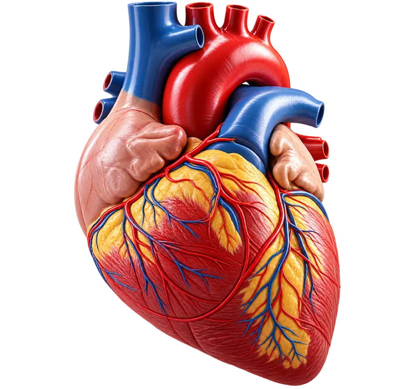

The Mission Hospital provides comprehensive cardiac care with advanced diagnosis and treatment for a wide range of heart conditions. Our experienced cardiology team offers personalized care, from preventive heart health and medical management to advanced cardiac procedures and emergency care.

The Mission Hospital Durgapur epitomizes a complete, wholesome; guideline based dedicated approach to all cardio logical problems both invasive and noninvasive. Equipped with the latest generation cardiac catheterization laboratory available in the world today all complex cardio logical interventions like primary and complex angioplasties, balloon valvuloplasties, carotid and peripheral interventions, aortic stent graft implantations, cardiac resynchronization therapies, implantable cardioverter defibrillator imolantations, device closures of various congenital defects the list is unending. Suffice it to say whatever happens in cardiology today in the world happens here maintaining similar international standards.
A young dynamic team with learned expertise is the key to this success. In the 3rd year of its birth it has received accolades from all and sundry regarding the phenomenal achievements with enviable success. This has been instrumental in developing a commendable paediatirc cardiac surgery services providing informative and accurate echocardiographic and cardiac catheterization details which forms the backbone to this.
All the services are provided at a very reasonable rate well within the limits of affordability of the middle class as well as providing tiered services with plush comfort for those desiring. However it has furthered its humanitarian efforts by offering services even to the underprivileged through a different wing backed up by NGO mediated healthy heart services which is really a remarkable feat remaining within the realms of a private corporate infrastructure.
The hospital holds regular check up camps using on field yet remotely interpretable ECG machines, on field echocardiographic screening facilities, on field basic blood parameter assessments. Ill patients are transported by the hospital in fully equipped critical care ambulances equipped with ventilators cardiac defibrillators and external pacesetting arrangements.
The department is preparing to offer academic courses like PG diploma in community cardiology, DNB courses in cardiology , on-hand echocardiography training to deserving and aspiring young doctors. A technician training course is also in place for Cathlab and echocardiography technicians. We are to hold 'The Mission Cardiology Update' from 2011 onwards an endeavor to refresh and update the knowledge of local physicians, cardiologists and post graduate students.
Invasive Cardiac Electrophysiology and Radiofrequency Ablation - An Introduction This is a specialized subdivision of Cardiology that deals with cardiac rhythm disorders. By this, we mean abnormalities of the heartbeat. In Medical terminology these are referred to as CARDIAC ARRHYTHMIAS
At The Mission Hospital, our Cardiology Department offers comprehensive, patient-focused care for a wide range of heart conditions. From advanced diagnostic evaluations and preventive care to minimally invasive procedures and emergency cardiac treatment, our experienced team provides personalized treatment supported by modern technology.
Our medical team is made up of highly qualified doctors, nurses, and healthcare professionals who are dedicated to providing exceptional patient care.

ORTHOPAEDICS (MBBS, MS, MRCS(ENGLAND),FRCS (TRAUMA & ORTHOPAEDICS))
BOOK APPOINTMENT


Find answers to common questions about our doctors, specialties, appointments, consultations, and healthcare services.

If you any questions, just book a 15-minute call with us before any doubts.
Request a call backCardiac arrhythmia refers to an abnormal heart rhythm where the heart may beat too fast, too slowly, or irregularly. Some fast heart rhythms can cause palpitations, breathing difficulty, dizziness, loss of consciousness, and, in severe cases, serious cardiac complications.
Arrhythmias can occur in people of all age groups. They may result from abnormal electrical pathways in the heart, underlying heart conditions, structural heart problems, or other factors affecting the heart's electrical system. Some patients may have an arrhythmia despite having an otherwise healthy heart.
Depending on the symptoms and suspected rhythm disorder, doctors may use an ECG, cardiac monitoring, echocardiography, or an electrophysiology study (EPS). An electrophysiology study can provide detailed information about the heart's electrical activity and help identify the source of an abnormal rhythm.
An electrophysiology study is a specialized cardiac procedure performed in an EP or cardiac catheterization laboratory. Special catheters are introduced through a blood vessel, usually from the groin, to record electrical signals from inside the heart. The study helps doctors identify the type and source of an abnormal heart rhythm and determine the appropriate treatment.
Radiofrequency ablation is a minimally invasive treatment for certain abnormal heart rhythms. During the procedure, a specialized catheter is guided to the area responsible for the abnormal electrical signal. Radiofrequency energy is then used to treat the targeted tissue and help restore a normal heart rhythm.
Radiofrequency ablation can be highly effective for selected types of arrhythmias, with success depending on the specific rhythm disorder and individual patient factors. Your electrophysiologist will assess your condition and discuss the expected benefits, risks, and likelihood of recurrence before treatment.
An ICD is a small device implanted under the skin that continuously monitors the heart rhythm. If it detects certain dangerous heart rhythms, it can deliver an electrical shock to restore a safer rhythm. Depending on the device and patient condition, it may also provide pacing support for slow heart rates.
Cardiac Resynchronization Therapy is an advanced treatment for selected patients with heart failure and abnormal electrical conduction. A specialized pacing system helps coordinate the contractions of the heart's chambers, which may improve heart function and reduce symptoms in appropriate patients.
Treatment depends on the type and cause of the arrhythmia. Some rhythm disorders can be treated with procedures such as catheter ablation, while others may require medicines, pacemakers, ICDs, or a combination of treatments. Your cardiologist or electrophysiologist will recommend the most suitable approach after evaluation.
Seek urgent medical attention if an abnormal heartbeat is accompanied by severe chest pain, difficulty breathing, fainting, severe dizziness, or sudden weakness. These symptoms can indicate a serious cardiac condition requiring immediate evaluation.

Cardiology

Cardiology

Cardiology